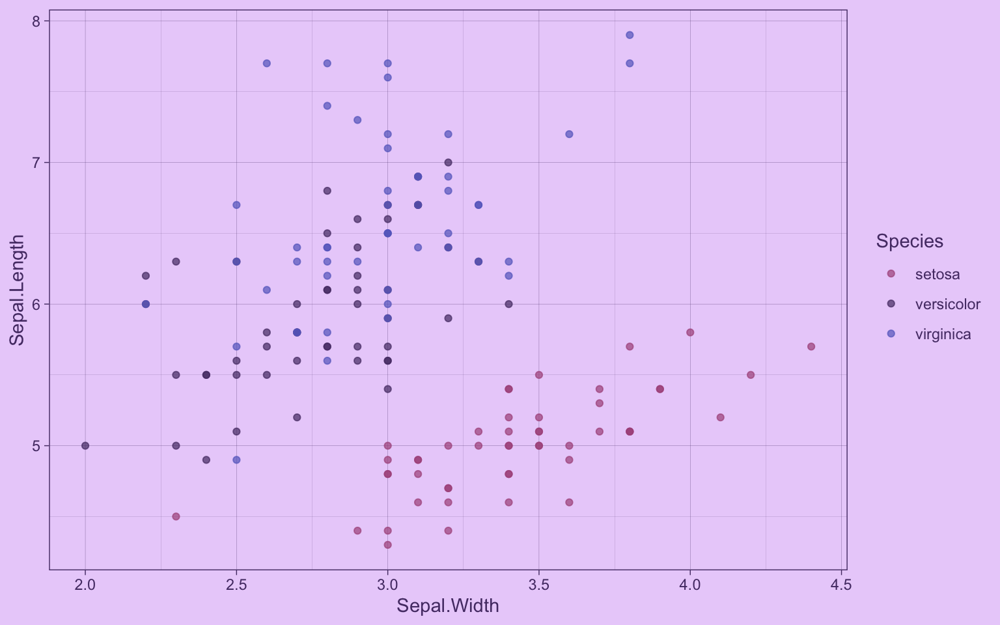
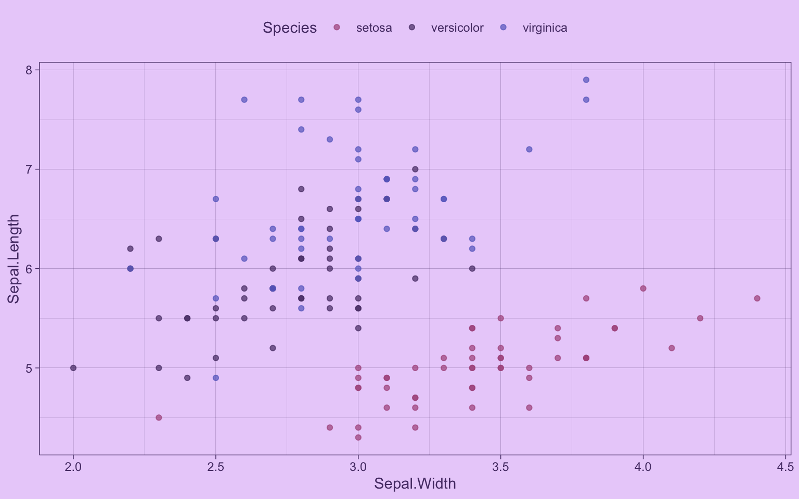

Medir el ancho de una aplicación Shiny como una variable reactiva y usarla para adaptar los contenidos de la app
6/4/2026
Al desarrollar aplicaciones web Shiny, tenemos que considerar que van a ser visitadas desde distintos dispositivos: celulares, tablets, computadores grandes, computadores pequeños… Por eso es importante diseñarlas pensando en la reactividad; es decir, que la aplicación se adapte a distintos tamaños de ventana o pantalla. Si bien Shiny hace gran parte de eso por sí sólo, puede ser útil usar el ancho de la ventana para adaptar los contenidos de la app: mostrar u ocultar elementos, ajustar los gráficos, cambiar un layout, o elegir qué visualización presentar según si el usuario está en un computador de escritorio o en un dispositivo móvil.
En este tutorial veremos cómo capturar el ancho de la ventana como un input reactivo de Shiny, para poder usar esta variable en nuestra app para adaptar sus contenidos.
Capturar el ancho de la ventana
Para obtener el ancho actual de la ventana en cualquier momento de la ejecución de nuestra aplicación, usaremos JavaScript. No es necesario aprender este lenguaje, sino solamente saber cómo integrarlo en la app Shiny.
Hay dos formas de incluir este código JavaScript en tu app:
Cargar código de JavaScript externo
Con el siguiente código en la interfaz (UI) de tu aplicación harás que el script se cargue al ejecutar la app:
tags$head(
tags$script(src = "ancho.js")
),
De esta forma, el script queda disponible para ejecutarse en tu app.
Luego, creas un archivo JavaScript, en este caso llamado ancho.js, dentro de la carpeta www/ de tu aplicación, que va a contener el código JavaScript necesario para medir el ancho tanto al abrir la app como al cambiar la ventana:
$(document).on('shiny:connected', function() {
Shiny.setInputValue('window_width', window.innerWidth);
});
$(window).on('resize', function() {
Shiny.setInputValue('window_width', window.innerWidth);
});
El primer bloque envía el ancho apenas la app se conecta, y el segundo lo actualiza cada vez que cambia el tamaño de la ventana.
Guarda ese código en un archivo ancho.js dentro de la carpeta www de tu aplicación, y asegúrate de que tu app lo incluya en su UI.
Si prefieres mantener todo en el mismo archivo de tu app, puedes escribir el JavaScript directamente en la UI usando tags$script(HTML(...)):
tags$head(
tags$script(HTML("
$(document).on('shiny:connected', function() {
Shiny.setInputValue('window_width', window.innerWidth);
});
$(window).on('resize', function() {
Shiny.setInputValue('window_width', window.innerWidth);
});
"))
)
Crear una variable reactiva con el ancho
Una vez que el JavaScript está en la UI, Shiny recibirá el ancho de la ventana como input$window_width. De este modo podemos acceder al ancho como una variable.
Si creamos un observador (observe()), podemos hacer que Shiny imprima el valor del input y así veamos la cifra que nos entrega. Como los observadores se actualizan cada vez que cambia el valor de los inputs que incluye, veremos cómo se actualiza el ancho cada vez que cambiamos el tamaño de la ventana:
observe({
message(input$window_width)
})
Al ejecutar la app, si jugamos con el ancho de la ventana (o del panel Viewer en RStudio) veremos los cambios:
645
649
660
714
741
761
786
803
810
817
827
832
836
840
843
848
Notamos que los valores cambian demasiado rápido! 😵💫 El input se actualiza con demasiada frecuencia, lo que nos puede causar problemas.
Ralentizar las actualizaciones del input
Como el evento resize se dispara muy frecuentemente mientras se cambia el tamaño de la ventana, input$window_width se actualizará decenas de veces por segundo, lo que puede generar cálculos innecesarios y hacer la app más lenta.
Para evitar esto, usamos la función debounce(), que retarda la reactividad hasta que el valor deje de cambiar por un tiempo determinado (en milisegundos):
Primero creamos una variable reactiva a partir del input:
ancho <- reactive(input$window_width)
Ahora podemos acceder al ancho con el objeto ancho(). Luego, aplicamos debounce() a este objeto, indicando un tiempo de espera de 100 milisegundos:
ancho <- debounce(ancho, 100)
Con este código, ancho() sólo se actualizará cuando el ancho de la ventana lleve al menos 100 milisegundos sin cambiar, reduciendo significativamente la cantidad de actualizaciones.
Puedes volver a probarlo con un observe():
observe({
message(ancho())
})
725
891
762
904
Ahora los mensajes en la consola aparecerán de forma mucho más espaciada mientras cambias el tamaño de la ventana.
Usar el ancho en un output
Siguiendo los pasos anteriores, puedes usar ancho() como cualquier otro objeto reactivo dentro de la sección server de tu app. Por ejemplo, para mostrar el ancho como un texto en tu app, imprimes el texto con renderText() en el server:
texto_ancho <- renderText({
paste("El ancho de la ventana es:", ancho())
})
Y luego ubicas el output en alguna parte de la interfaz (UI) de tu app:
textOutput("texto_ancho")
Adaptar los contenidos de la app según el ancho
Ahora podemos mostrar u ocultar elementos de la aplicación dependiendo del ancho de la ventana. Para esto podemos combinar ancho() con
las funciones show() y hide() del paquete {shinyjs}.
Por ejemplo, en una app que permite seleccionar ubicaciones desde un mapa (más adecuado para pantallas anchas) y un selector común (más adecuado para pantallas angostas o móviles), podemos alternar entre ambos según el ancho de la ventana:
observe({
req(ancho())
if (ancho() > 600) {
show("mapa")
hide("selector")
} else {
hide("mapa")
show("selector")
}
})
En el código anterior, usamos req(ancho()) para asegurarnos de que el valor ya esté disponible antes de intentar usarlo (en el primer instante de la app, antes de que el JavaScript se ejecute, input$window_width podría ser NULL). elDentro del observador, que se evaluará cada vez que sus elementos internos cambien, sanse detecta queoel de la ventana supera los 600 píxeles, se muestra el map(show() a y se oculta el sel(hide()) ector; y si la ventana es más angosta (como en un celular), se oculta el mapa y se muestra el selector. Los textos a los que se hace referencia en show() y hide() son los id de los elementos que queremos afectar.
Así podemos adaptar la experiencia de usuario para optimizarla según el dispositivo que use.
Adaptar una visualización de datos según el ancho
Si nuestra aplicación muestra gráficos, la mayoría de los paquetes como {ggplot2} adaptarán las visualizaciones al espacio disponible.
Pero usando el ancho de la ventana, podemos tomar decisiones más específicas sobre qué mostrar, y adaptar mejor los gráficos.
Empecemos con un gráfico de prueba:
library(ggplot2)
grafico <- ggplot(iris) +
aes(Sepal.Width, Sepal.Length, color = Species) +
geom_point(alpha = 0.7) +
scale_color_discrete(palette = c("#AC558A", "#553A74", "#666BC7")) +
theme_linedraw(paper = "#EAD2FA", ink = "#553A74", accent = "#9069C0")
grafico

Para incluirlo en la app, debería ir dentro de renderPlot()
grafico <- renderPlot({
ggplot(iris) +
aes(Sepal.Width, Sepal.Length, color = Species) +
geom_point(alpha = 0.7) +
scale_color_discrete(
palette = c("#AC558A", "#553A74", "#666BC7")) +
theme_linedraw(paper = "#EAD2FA",
ink = "#553A74",
accent = "#9069C0")
})
Este sería el gráfico normal, pero si queremos adaptarlo según el ancho, agregamos un if dentro de renderPlot() para agregarle capas condicionales:
grafico <- renderPlot({
# el gráfico normal
grafico <- ggplot(iris) +
aes(Sepal.Width, Sepal.Length, color = Species) +
geom_point(alpha = 0.7) +
scale_color_discrete(
palette = c("#AC558A", "#553A74", "#666BC7")) +
theme_linedraw(paper = "#EAD2FA",
ink = "#553A74",
accent = "#9069C0")
# condicionalidad
if (ancho() < 600) {
# si el ancho es menor a 600, mover la leyenda a la parte superior
grafico <- grafico +
theme(legend.position = "top")
}
return(grafico)
})

Como el espacio horizontal es más escaso en celulares, adaptamos el gráfico para que la leyenda aparezca arriba, y así haya más espacio para los datos!
Bonus: obtener el ancho aproximado de la ventana desde un output existente
Una forma más simple (pero menos prolija) es obtener una aproximación del ancho de la ventana a partir de uno de los output de tu aplicación, dado que cada sesión de Shiny tiene un objeto session$clientData donde viene información sobre los outputs, entre otras. Si en tu app hay un output, por ejemplo output$grafico, que usa el ancho completo de la ventana (o generalmente casi el ancho completo, porque los elementos suelen tener márgenes y espaciados), puedes obtener su ancho en el objeto session$clientData$output_grafico_width, y como es un objeto reactivo, se actualizará en tiempo real.